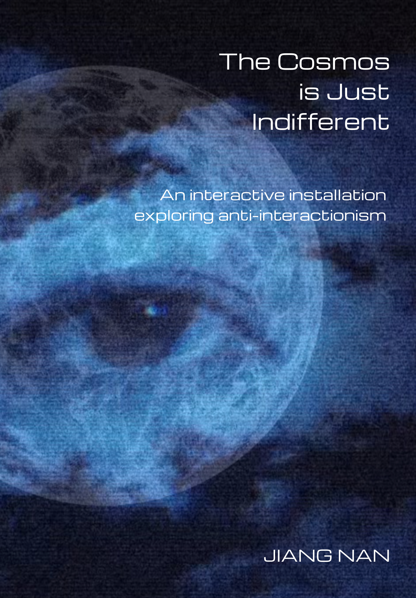
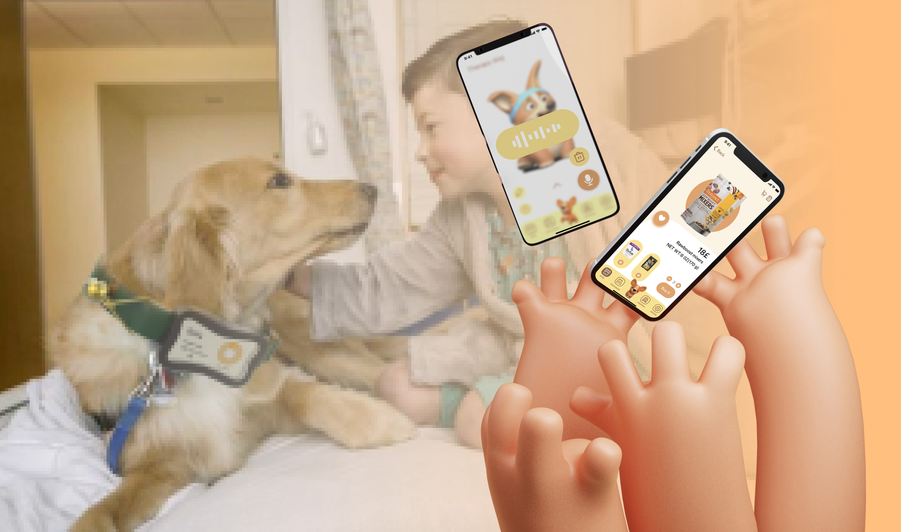
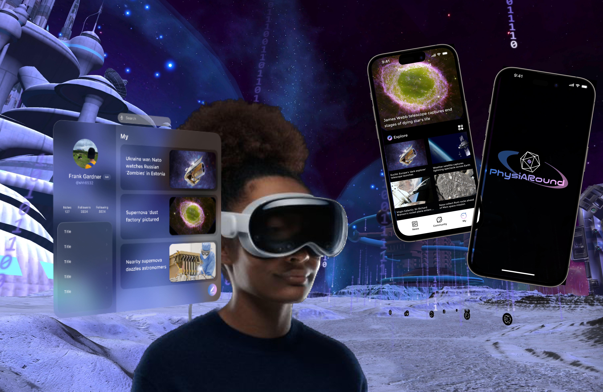

INTERACTION ART

Pulse of the COSMOS
Arduino / openFrameworks

the cosmos is just indifferen
TouchDesigner / AIGC

Galdrastafir
Arduino / JavaScript

Mimic Octopus
TouchDesigner / Arduino

Musical Archeo-Conch
Max/MSP / Audio-Visual
VISUAL DESIGN
Snowstorm Manor
p5.js / Game Design

CollidE
Digital Fashion / CLO3D

Smart Collar for Therapy Dog
UI / UX Design

PhysiARound
UI / UX Design